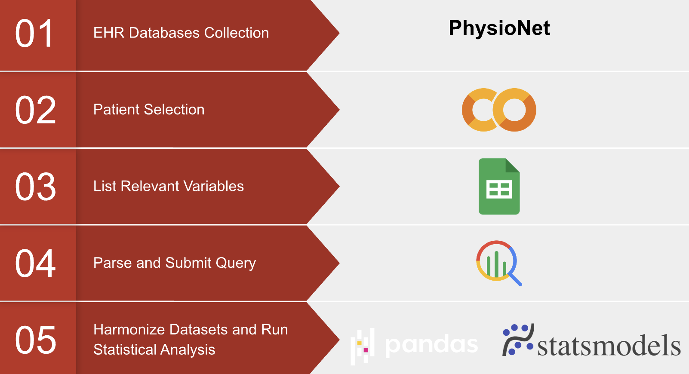

Project Motivation
TherLiD is an open-source dataset developed to investigate potential racial and ethnic disparities in infrared thermometry within intensive care unit (ICU) settings. The dataset comprises 13,251 paired temperature readings—one from contact thermometers (oral, core, or rectal) and one from infrared-based (temporal) thermometers—measured within a one-hour window. These readings are sourced from the MIMIC-IV1 and eICU2 electronic heatlth record (EHR) databases, encompassing 8,511 unique patients. The inclusion of comprehensive demographic and clinical data allows for a detailed analysis of temperature measurement discrepancies across different patient populations.
Methodology
The TherLiD dataset was constructed by harmonizing three Electronic Health Record (EHR) databases: MIMIC-IV, eICU-CRD-1, and eICU-CRD-2. Key steps in the dataset creation included:
- Temperature Mapping: Standardizing temperature location labels to ensure consistency across databases.
- Temperature Pairing: Aligning contact and infrared temperature readings within a one-hour time window, ensuring accurate pairing.
- Patient Contextualization: Linking temperature pairs with demographic information, vital signs, laboratory values, and Sequential Organ Failure Assessment (SOFA) scores.
- Database Integration: Standardizing variables across databases to maintain consistency and minimize missing data.
The final dataset includes variables such as patient identifiers, temperature measurement details, vital signs, laboratory test results, and SOFA scores, providing a comprehensive view of each patient's clinical status.

Results
TherLiD offers a robust framework for analyzing the accuracy of infrared thermometry in diverse patient populations. By providing paired temperature readings along with detailed patient data, it enables researchers to assess potential biases in temperature measurements and their implications for patient care. The dataset's open-access nature facilitates reproducible research and supports the development of more equitable healthcare technologies.
Conclusion
TherLiD serves as a valuable resource for investigating disparities in temperature measurement accuracy within ICU settings. Its comprehensive data structure supports research aimed at improving diagnostic accuracy and ensuring equitable healthcare delivery. Future studies utilizing TherLiD can contribute to the development of more reliable and unbiased medical devices, enhancing patient outcomes across diverse populations.
Github Repo, Published Papers, and Presentation
Github link
Society of Critcal Care Medicine published abstract
Physionet published open source dataset + paper